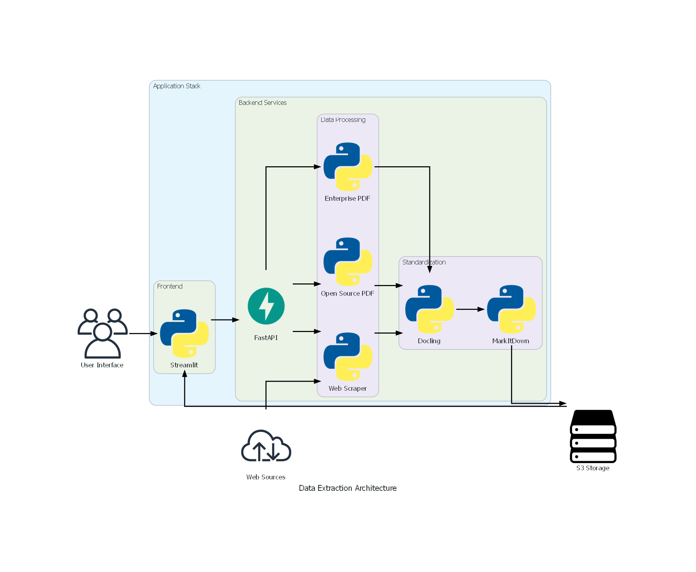

git clone git@github.com:Neneanuj/Data_Extraction_Platform.git
Create .env file:
# AWS Configuration
AWS_ACCESS_KEY_ID=your_key
AWS_SECRET_ACCESS_KEY=your_secret
AWS_REGION=your_region
#Diffbot
DIFFBOT_TOKEN=your_token
#Adobe
PDF_SERVICES_CLIENT_ID=your_key
PDF_SERVICES_CLIENT_SECRET=your_secret
def generate_presigned_url(bucket: str, key: str, expiration=3600) -> str:
"""Generate a presigned URL for downloading from S3 with enterprise-level security configuration."""
s3_client = boto3.client('s3', config=boto3.session.Config(signature_version='s3v4'))
try:
return s3_client.generate_presigned_url(
'get_object',
Params={'Bucket': bucket, 'Key': key},
ExpiresIn=expiration
)
except ClientError as e:
raise RuntimeError(f"Failed to generate presigned URL: {str(e)}")
def upload_to_s3(bucket_name: str, s3_key: str, data: Union[bytes, str]) -> None:
"""
Upload a file or byte data to a specified S3 bucket.
:param bucket_name: The name of the target S3 bucket
:param s3_key: The target key (path) in S3
:param data: Can be either a file path (str) or byte data (bytes)
"""
try:
s3 = boto3.client('s3')
if isinstance(data, bytes):
# Handle byte data
s3.put_object(Bucket=bucket_name, Key=s3_key, Body=data)
else:
# Handle file path
s3.upload_file(Filename=data, Bucket=bucket_name, Key=s3_key)
except Exception as e:
raise Exception(f"Failed to upload to S3: {str(e)}")
def generate_s3_key(file_type: str, file_name: str) -> str:
"""
Generate an S3 key for storing files.
"""
timestamp = datetime.now().strftime('%Y%m%d_%H%M%S')
return f"{file_type}/{timestamp}_{file_name}"
def download_from_s3(bucket_name: str, object_name: str, file_path: str) -> None:
"""
Download a file from an S3 bucket.
"""
s3_client = boto3.client('s3')
try:
s3_client.download_file(bucket_name, object_name, file_path)
except Exception as e:
raise Exception(f"Failed to download from S3: {str(e)}")
def extract_and_store_pdf(pdf_path: str, bucket_name: str):
"""Core processing logic"""
base_key = generate_s3_base_key(pdf_path)
s3_client = boto3.client("s3")
try:
# Retrieve PDF content from S3
response = s3_client.get_object(Bucket=bucket_name, Key=pdf_path)
pdf_byte_data = response["Body"].read()
# Initialize Adobe services
credentials = ServicePrincipalCredentials(
client_id=os.getenv('PDF_SERVICES_CLIENT_ID'),
client_secret=os.getenv('PDF_SERVICES_CLIENT_SECRET')
)
pdf_services = PDFServices(credentials=credentials)
# Upload byte data directly (following the official example)
input_asset = pdf_services.upload(input_stream=pdf_byte_data, mime_type=PDFServicesMediaType.PDF)
# Configure extraction parameters
extract_pdf_params = ExtractPDFParams(
elements_to_extract=[ExtractElementType.TEXT, ExtractElementType.TABLES],
elements_to_extract_renditions=[ExtractRenditionsElementType.TABLES, ExtractRenditionsElementType.FIGURES]
)
# Submit the job
extract_pdf_job = ExtractPDFJob(input_asset=input_asset, extract_pdf_params=extract_pdf_params)
location = pdf_services.submit(extract_pdf_job)
result = pdf_services.get_job_result(location, ExtractPDFResult)
# Process the result (key fixing point)
result_asset: CloudAsset = result.get_result().get_resource()
stream_asset: StreamAsset = pdf_services.get_content(result_asset)
# Directly get byte data, no need to call read()
zip_data = stream_asset.get_input_stream() # Removed .read()
# Store the original ZIP
raw_zip_key = f"{base_key}extracted_data.zip"
upload_to_s3(bucket_name, raw_zip_key, zip_data)
# Parse and categorize storage
with zipfile.ZipFile(BytesIO(zip_data)) as archive:
# ... subsequent processing remains unchanged ...
return {"download_url": create_presigned_url(bucket_name, raw_zip_key)}
except (ServiceApiException, ServiceUsageException, SdkException) as e:
logging.error(f"Adobe API error: {str(e)}")
raise RuntimeError(f"Document processing failed: {str(e)}")
except Exception as e:
logging.error(f"System error: {str(e)}")
raise RuntimeError(f"System processing exception: {str(e)}")
def process_pdf_with_open_source(pdf_source: str) -> Dict[str, Any]:
"""
Parse PDF and return:
- "docling_markdown": the string after docling conversion
- "markitdown_markdown": the string after markitdown conversion
- "images_dir": the directory where images are extracted
- "tables_dir": the directory where tables (CSV) are extracted
"""
# If the input is a remote URL, download it to a local temporary file
if pdf_source.lower().startswith("http"):
with tempfile.NamedTemporaryFile(delete=False, suffix=".pdf") as tmp:
response = requests.get(pdf_source)
tmp.write(response.content)
pdf_path = tmp.name
else:
# If it is a local file, use it directly
pdf_path = pdf_source
# Extract images to a temporary folder
images_dir = tempfile.mkdtemp()
_extract_images(pdf_path, images_dir)
# Extract tables to a temporary folder
tables_dir = tempfile.mkdtemp()
_extract_tables(pdf_path, tables_dir)
# Extract pure text
text_content = _extract_text_only(pdf_path)
# Optionally, if you want to delete the temporary PDF, you can do it here
# However, if the pdf_source was a local file, it may not need to be deleted. This depends on the scenario.
if pdf_source.lower().startswith("http"):
os.remove(pdf_path)
# Write this text to a temporary .md file for docling/markitdown parsing
with tempfile.NamedTemporaryFile(delete=False, suffix=".md") as tmp_file:
tmp_file.write(text_content.encode("utf-8"))
tmp_file_path = tmp_file.name
docling_md = docling_convert(tmp_file_path)
os.remove(tmp_file_path)
with tempfile.NamedTemporaryFile(delete=False, suffix=".txt") as tmp_file2:
tmp_file2.write(text_content.encode("utf-8"))
tmp_path_txt2 = tmp_file2.name
markitdown_md = markitdown_convert(tmp_path_txt2)
os.remove(tmp_path_txt2)
# Return relevant information
return {
"docling_markdown": docling_md,
"markitdown_markdown": markitdown_md,
"images_dir": images_dir,
"tables_dir": tables_dir
}
def _extract_images(pdf_path: str, output_dir: str):
"""Extract all images using PyMuPDF to a specified directory"""
doc = fitz.open(pdf_path)
for page_num in range(len(doc)):
page = doc.load_page(page_num)
for img_index, img in enumerate(page.get_images(full=True)):
xref = img[0]
base_image = doc.extract_image(xref)
image_ext = base_image["ext"]
image_filename = f"page{page_num+1}_img{img_index+1}.{image_ext}"
image_path = os.path.join(output_dir, image_filename)
with open(image_path, "wb") as f:
f.write(base_image["image"])
doc.close()
def _extract_tables(pdf_path: str, output_dir: str):
"""Extract tables using pdfplumber into CSV files"""
with pdfplumber.open(pdf_path) as pdf:
for page_num, page in enumerate(pdf.pages):
tables = page.extract_tables()
print(f"Page {page_num+1} - tables found: {len(tables)}") # Displaying the number of tables found
for t_idx, table in enumerate(tables):
csv_filename = f"page{page_num+1}_table{t_idx+1}.csv"
csv_path = os.path.join(output_dir, csv_filename)
with open(csv_path, "w", newline="", encoding="utf-8") as csv_file:
writer = csv.writer(csv_file)
writer.writerows(table)
def _extract_text_only(pdf_path: str) -> str:
"""Extract text using pdfplumber and concatenate into a single string"""
lines = []
with pdfplumber.open(pdf_path) as pdf:
for page in pdf.pages:
text = page.extract_text()
if text:
lines.append(text.strip())
return "\n".join(lines)
def parse_url(url):
"""Fetch and parse HTML content"""
valid, error_message = is_valid_url(url)
if not valid:
return None, error_message
try:
headers = {"User-Agent": "Mozilla/5.0 (Windows NT 10.0; Win64; x64)"}
response = requests.get(url, headers=headers)
soup = BeautifulSoup(response.content, 'html.parser')
return soup, None
except Exception as e:
return None, f"Failed to parse URL: {str(e)}"
def extract_clean_text(soup):
"""Extract and clean text"""
try:
return re.sub(r'\s+', ' ', soup.get_text()).strip(), None
except Exception:
return None, "Text extraction failed"
def extract_urls(soup, base_url):
"""Extract URLs with metadata from HTML"""
try:
urls = []
for i, link in enumerate(soup.find_all('a')):
href = link.get('href')
if href:
urls.append({
'position': i + 1,
'url': urljoin(base_url, href),
'text': link.text.strip(),
'title': link.get('title', 'N/A')
})
return urls, None
except Exception:
return None, "URL extraction failed"
def extract_images(soup, base_url):
"""Extract images with metadata (NOT the actual image files, just info)"""
try:
images = []
for i, img in enumerate(soup.find_all('img')):
src = img.get('src', '')
if not src:
continue
abs_src = urljoin(base_url, src)
images.append({
'position': i + 1,
'alt': img.get('alt', '').strip(),
'src': abs_src,
'width': img.get('width', 'N/A'),
'height': img.get('height', 'N/A')
})
return images, None
except Exception:
return None, "Image extraction failed"
def extract_tables(soup):
"""Extract tables from HTML (as DataFrame list)"""
try:
tables = []
for table in soup.find_all('table'):
headers = [th.text.strip() for th in table.find_all('th')]
if not headers and table.find('tr'):
headers = [f'Column_{i}' for i in range(len(table.find('tr').find_all('td')))]
rows = []
for tr in table.find_all('tr'):
tds = tr.find_all('td')
if tds and len(tds) == len(headers):
row_data = [td.text.strip() for td in tds]
rows.append(row_data)
if rows:
df = pd.DataFrame(rows, columns=headers)
tables.append(df)
return tables, None
except Exception:
return None, "Table extraction failed"
def scrape_url_and_convert(url: str):
"""
Publicly exposed scraping and conversion function:
1) Parse URL -> Extract text, images, tables, and links
2) Convert extracted text into docling.md and markitdown.md
Returns:
{
"docling_markdown": str,
"markitdown_markdown": str,
"text_raw": str, # Optionally, saves the original extracted text
"images": [...], # Metadata of images
"tables": [DataFrame1, DataFrame2, ...],
"urls": [...], # Metadata of links
"error": None or "xxxxx"
}
"""
soup, error = parse_url(url)
if error:
return {"error": error}
# Extract text
text_data, err_text = extract_clean_text(soup)
if err_text:
return {"error": err_text}
# Extract URLs
urls_data, err_urls = extract_urls(soup, url)
if err_urls:
urls_data = []
# Extract images metadata
images_data, err_imgs = extract_images(soup, url)
if err_imgs:
images_data = []
# Extract tables
tables_data, err_tables = extract_tables(soup)
if err_tables:
tables_data = []
# Convert text_data to docling.md and markitdown.md
with tempfile.NamedTemporaryFile(delete=False, suffix=".md") as tmp_md:
tmp_md.write(text_data.encode("utf-8"))
tmp_md_path = tmp_md.name
docling_md = ""
markitdown_md = ""
try:
docling_md = docling_convert(tmp_md_path)
except Exception as e:
docling_md = f"Docling conversion failed: {e}"
try:
markitdown_md = markitdown_convert(tmp_md_path)
except Exception as e:
markitdown_md = f"Markitdown conversion failed: {e}"
# Delete temporary file after use
os.remove(tmp_md_path)
return {
"error": None,
"docling_markdown": docling_md,
"markitdown_markdown": markitdown_md,
"text_raw": text_data,
"images": images_data,
"tables": tables_data,
"urls": urls_data
}
def scrape_url_with_diffbot(url, output_file="scraped_data.md"):
api_url = "https://api.diffbot.com/v3/analyze"
token = os.environ.get("DIFFBOT_TOKEN")
if not token:
logger.error("DIFFBOT_TOKEN environment variable not set.")
return {"error": "DIFFBOT_TOKEN environment variable not set."}
params = {
'token': token,
'url': url
}
try:
response = requests.get(api_url, params=params)
response.raise_for_status()
data = response.json()
markdown_content = f"# Scraped Data Report\n\n"
markdown_content += f"## Source URL\n{url}\n\n"
markdown_content += f"## Timestamp\n{datetime.now().strftime('%Y-%m-%d %H:%M:%S')}\n\n"
markdown_content += "## Extracted Content\n"
markdown_content += "```\n"
markdown_content += json.dumps(data, indent=2)
markdown_content += "\n```\n"
with open(output_file, 'w', encoding='utf-8') as f:
f.write(markdown_content)
logger.info(f"Data has been saved to {output_file}")
return data
except requests.RequestException as e:
logger.error(f"Error during scraping: {e}")
return {"error": str(e)}
def docling_convert(source: str) -> str:
"""
Convert a PDF (or URL) to a markdown text in a technical style using Docling.
:param source: Path to a PDF file or a URL
:return: Markdown text after conversion by Docling
"""
converter = DocumentConverter()
result = converter.convert(source)
return result.document.export_to_markdown()
def markitdown_convert(file_path: str) -> str:
"""
Convert a file (such as .xlsx or .pdf) into Markdown text using MarkItDown.
:param file_path: The path to the file
:return: Markdown text after conversion by MarkItDown
"""
md = MarkItDown()
result = md.convert(file_path)
return result.text_content
@app.post("/upload_pdf_enterprise")
@app.post("/upload_pdf_opensource")
@app.post("/scrape_webpage")
@app.post("/scrape_diffbot")
cd webapp/backend/src/api
uvicorn main:app
cd webapp/frontend/src
streamlit run main.py
docker build --platform=linux/amd64 -t gcr.io/YOUR_PROJECT_ID/fastapi-app .
docker run --rm -it --env-file .env --platform linux/amd64 gcr.io/YOUR_PROJECT_ID/fastapi-app
docker push gcr.io/YOUR_PROJECT_ID/fastapi-app
gcloud run deploy fastapi-service \
--image gcr.io/YOUR_PROJECT_ID/fastapi-app \
--platform managed \
--region us-east1 \
--allow-unauthenticated